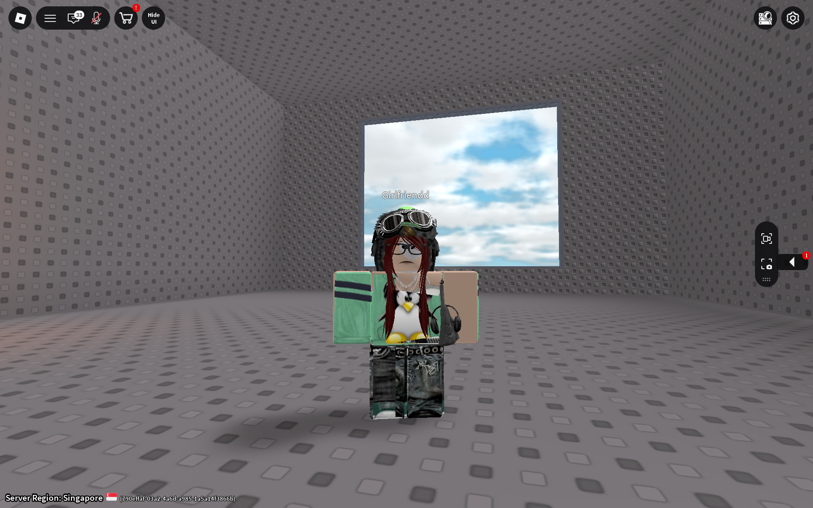

5 whole months of loving each other, I honestly don't know how to start this.
There's just so much I could say to you and/or for you.
Well, perhaps I'd like to reminisce first.
July hasn't been nice to us, as we've both been very busy with different things.
I've been focusing on my academics, and we've been missing lots of conversations together.
Even so, I still see a bright side in this month.
Even though we missed each other lots of times, and didn't have a lot of opportunities to talk to each other,
I can say for sure that I still love you the same way I loved you 5 months ago.
I'm very grateful my love, that throughout the 5 months of our loving and caring towards one another,
we reassured each other, we helped each other grow, and strengthened our bond much more together.
Even on my lowest, most unmotivated days, I still find joy in realizing that you'll always be here for me, that you'll always be willing to accept me.
I'm not the most brilliant boy you'll meet in your life, and I won't be the same forever,
but I promise I'll love you the same for the rest of my life. No one else could possibly understand me deeper than you could.
I'm especially grateful for the first time that we called with our cameras on.
I got to see you in your most natural state, just at home, not wearing any makeup, yet despite this,
you're still the most beautiful girl I've ever laid my eyes on. It's one step closer to meeting you in person.
I love looking at you while we're on call my love. You're the most beautiful woman in the world.
Kisses
Happy 5th Monthsary to us, Mellisa. My love today, tomorrow, and forever.